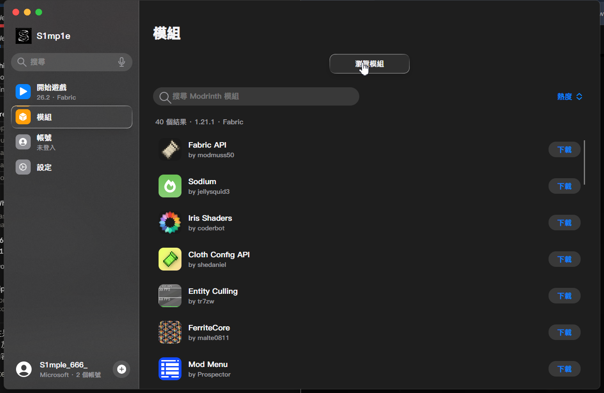
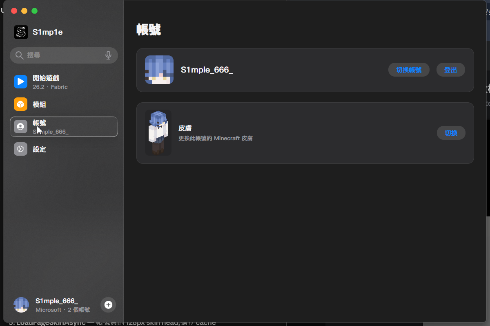
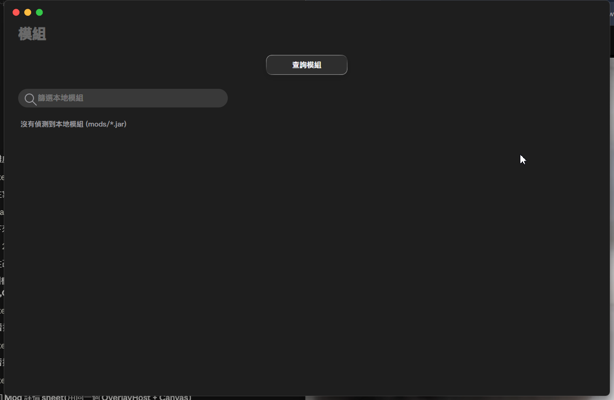

S1mp1e
Apple 液態玻璃風格的 Minecraft 啟動器與客戶端
從 1.8.9 到 26.2 · 一鍵安裝任何版本 · Modrinth 模組搜尋 · 皮膚匯入 · Microsoft 帳號登入
Apple 液態玻璃風格的 Minecraft 啟動器與客戶端
從 1.8.9 到 26.2 · 一鍵安裝任何版本 · Modrinth 模組搜尋 · 皮膚匯入 · Microsoft 帳號登入
不是磨砂濾鏡也不是靜態圖層。SkiaSharp SDF 折射 shader、邊緣高光、彈簧動畫,和 Apple 一樣。
裝好開,device-code 一組 code 直接登入你的 Microsoft 帳號。不用自建 Azure app。
UI 內搜尋任何 mod,一鍵下載到「該版本專屬資料夾」,不同 MC 版本互不干擾。
選 PNG,直接上傳到你 Mojang 帳號生效。真的改,不是本地覆蓋。
每個模組介紹自動翻譯 zh-TW,不用會英文也看得懂。
熱物欄、選中框、物品名、螢幕轉場、工具提示、選單背景 — 每一個 UI 表面都是玻璃。
所有版本一鍵安裝,自動處理 Java runtime、Fabric loader、liquid-glass 客戶端模組。



S1mp1e-0.1.0-setup.exe.minecraft 位置(或用預設)開源 · MIT License